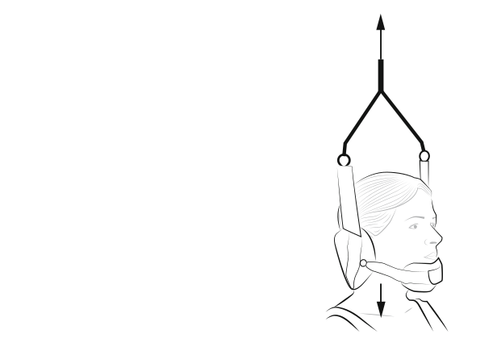
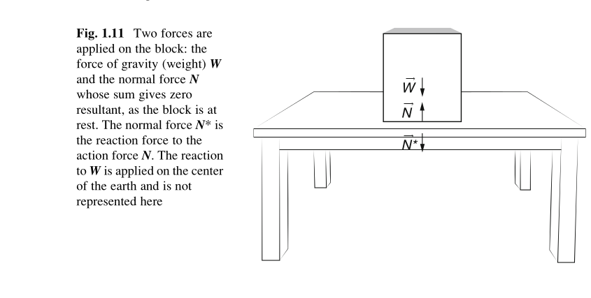
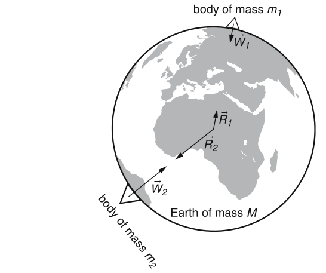
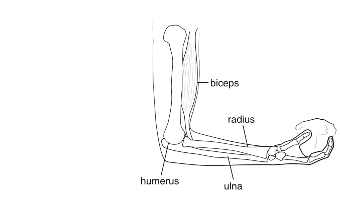

Ask AI:
States that …

A vertical upward traction force of 60 N, shown in the figure of Exercise 1.3, is applied on a head of a person standing straight. Suppose that the weight of the head is 45 N. Determine the resultant force on the head.
States that … \[ \boldsymbol{a} = \frac{1}{m} \boldsymbol{F} \] \[ \boldsymbol{a} = \lim_{\Delta t\rightarrow 0} \frac{\Delta \boldsymbol{v}}{\Delta t} = \frac{\mathrm{d} \boldsymbol{v}}{\mathrm{d} t} \]
\[ \frac{\mathrm{d} \boldsymbol{L}}{\mathrm{d} t} = \mathbf{F} \] \[ \boldsymbol{L} = m \boldsymbol{v} \]
allows us to solve problems like:
Exercise 1.4 What force should act on a ball of 0.6 kg mass, through a kick, to acquire an acceleration of 40 m/s\(^2\)?
when two bodies physically interact with one another … ACTION brings an equal an opposite REACTION
Exercise 1.5 In high jumping, an athlete exerts a force of 3000 N = \(3\times 10^3\) N = 3 kN against the ground during impulsion. Find the force exerted by the ground on the athlete. Discuss the nature of this force.



Ask AI:
By the end of this lecture students should be able to: